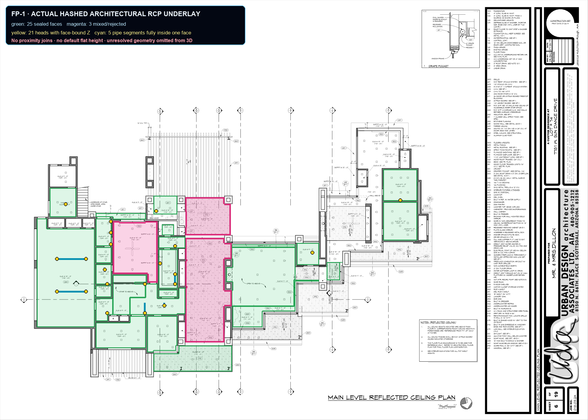
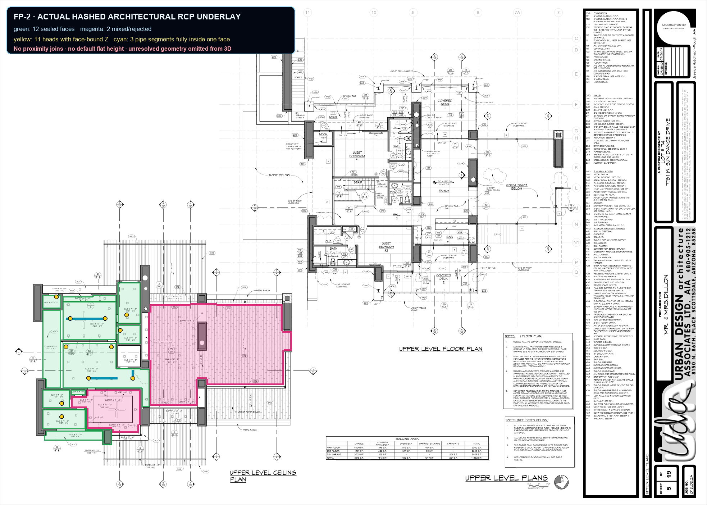

Source PDFs are identified by SHA-256 ed51fe47cdbb0c95db5d3a4f64117fe2625d3c0bf4e7170c6f3dec0d38ed11ba and 5175c15b80a53014b0dfd98f1ca5038a70ecb9578e004cda4f954aafc511a564. The vector replay found 37 single-surface faces and kept all 5 mixed CLG/SOFFIT faces unresolved.
This proves a partial architectural ceiling-surface join only. It does not claim whole-building roof planes, sprinkler code compliance, hydraulics, manufacturer deflector offsets, fabrication, approval, or field release.
21 heads and 5 pipe segments inherit Z from sealed architectural RCP vector faces.

11 heads and 3 pipe segments inherit Z from sealed architectural RCP vector faces.
